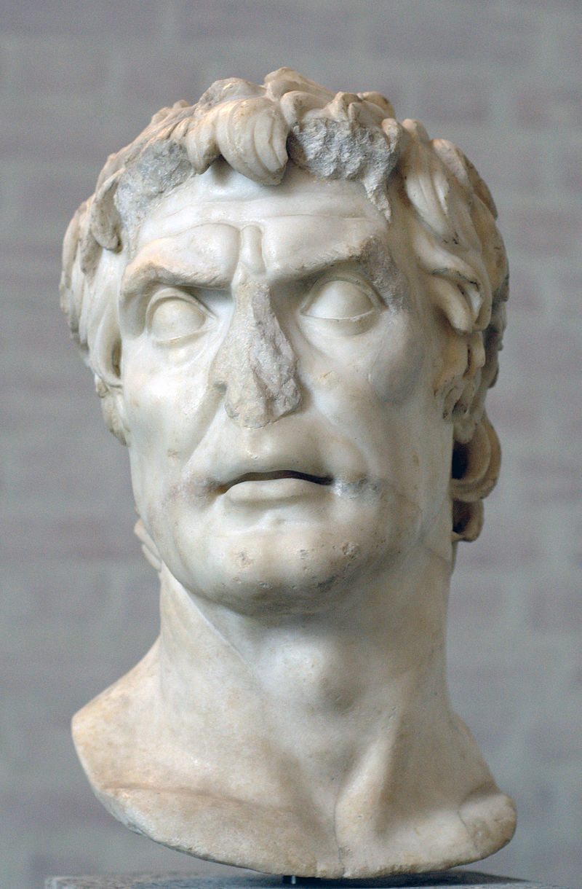
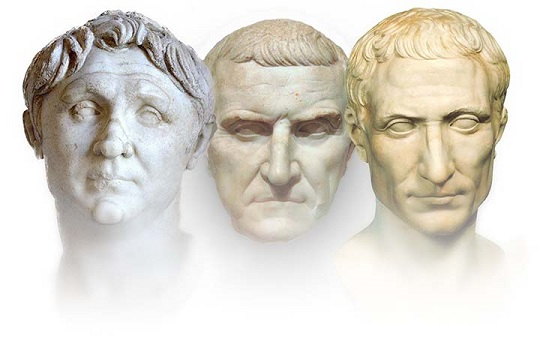
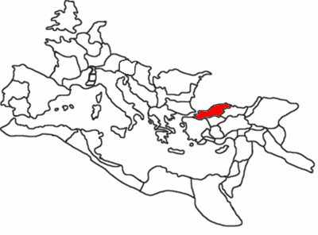
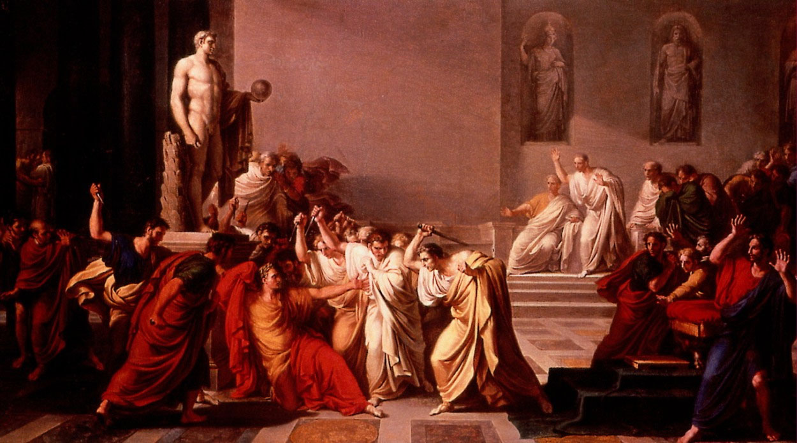
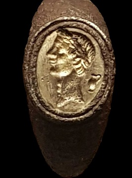
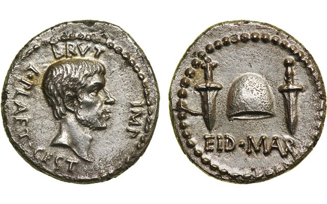

About the site:
Thank you for visiting! Some information about this site. This project was an example of producing a
mobile-first e-reader static site, to produce a better read-on-the-go experience for fans of ancient
history.
All images have been sourced from Wikimedia under the Creative Commons license. As noted on the homepage, the
translated source was sourced from the university
of
Chicago which is an excellent place to begin looking into more information, if you want to read more
about Caesar, his descendants and their times in the romans own words. Further down this page, you'll find a
gallery, so you can put faces to the names of all these ancient people. Below that is a suggested link for further
reading on the topic from more modern writers!
Gallery:

Sulla Felix, Dictator of Rome who drove the young Caesar into exile. He famously likened Caesar to
his lifelong rival with the words: "In him I see many a Marius!"

Left to Right: Pompey the Great, Crassus and Julius Caesar - Together they formed a political and
military alliance that dominated Rome.

The kindom of Bythinia, where Caesar began his career. He would be jeered at for the rest of his live,
with rumours that he was the lover of the king of Bythinia.

Vincenzo Camuccinis painting "La morte di Cesare", showing the assassination of Julius Caesar on the
floor of the senate.

Signet ring, from the British Museum collection, showing Caesars face in relief. Worn by one of his
supporters, after his death.

Coins minted by the armies of Brutus and Cassius, principal murderers of Caesar. Two daggers, the
weapons that killed Caesar, surround a Phrygian cap (A symbol of freed slaves in roman cultures) with "Eid Mars"
written beneath, The Ides of March, the day of Caesars death.
Previous
Next
Further reading:
Divided by fiction, non-fiction and multimedia categories: